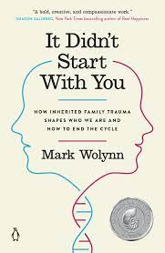

BOOK 13

"It Didn't Start with You" is a book written by Mark Wolynn
The author explores how unresolved traumas and family patterns can be passed down
through generations, affecting individuals in ways they may not fully understand. Wolynn delves into
the concept of inherited family trauma and offers insights on breaking these patterns for healing.